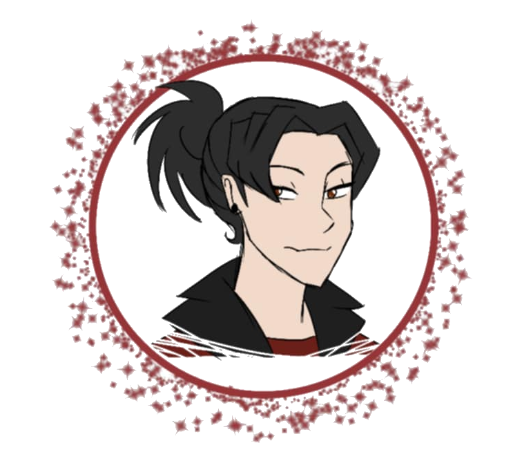

THE BEGINNING STARTS WITH KASAI GETTING UP AS HIS ALARM CLOCK GOES OFF
KASAI: *groggily rolls over and turns off his alarm. It takes a few panels but he gets up. He only has pj
bottoms but goes into the bathroom and brushes his teeth*
GOING THROUGH KASAI’S ROUTINE: HE GETS UP, STRETCHES, GOES TO THE BATHROOM, BRUSHES HIS TEETH, USES THE
BATHROOM, THEN GOES TO GET SOME BREAKFAST
KASAI: *goes to a cabinet and pulls out a bowl and cereal. Move to the fridge to grab milk. Fixes his bowl and
sits down to eat*

AFTER A FEW PANELS, KASAI LOOKS AROUND, HE SWALLOWS HIS MOUTHFUL OF CEREAL
KASAI: Grandma?
SILENCE
KASAI: Grandma? You up? *gets up from his seat and goes to the hallway* Grandma?
AS HE’S WALKING, A CREAK COMES FROM THE HALL CLOSET
KASAI: *stops in his tracks. Glares at the door*
FOR A FEW PANELS, IT SHOWS KASAI IN A TYPE OF BOXER STANCE GETTING READY TO OPEN THE DOOR….
HE OPENS IT
GABE: BOO! *gets taken down by Kasai* AH! DUDE, WAIT IT’S JUST ME!
KASAI: Gabriel!? *lets him go* Why am I not surprised?
GRANDMA: *opens the door to her room* Oh! Kasai, I see that you have found Gabriel.
KASAI: *gets up off the ground* Did you let him in? *points to the gasping Gabe on the ground*
GRANDMA: Yes, I did. He came by not too long ago. When I had offered to get you he said that he would just wait.
I went to use the bathroom and I guess he thought it a great opportunity to surprise you! *grabs Gabe’s cheeks*
He’s a cheeky one. *walks away*
GABE: *smiles and smooths his cheek* Your grandma is the best, man.
KASAI: *folds his arms* Yeah, I know. What’re you doing here? Shouldn’t you be in school?
GABE: *cheekily* Shouldn’t you be at work?
KASAI: *frowns* Very funny. *begins walking to the kitchen*
GABE: *follows* To answer your question, no. I was in school but we let out early today because-
KASAI: *grabs his seat but looks up in realization* Because it’s the last day of school.
GABE: *finger guns before sliding into a seat* Correct! And since it is currently 11:37 AM and you promised to
meet us in town before 11:30, you now owe everyone lunch.
KASAI: *sighs and scoots his chair back in* Alright, fine. Just let me get ready.
GABE: *finger salutes* Roger that, man. I’ll be down here. *takes a bit of Kasai’s cereal*
A BIT LATER
KASAI COMES DOWNSTAIRS, DRESSED AND KISSES HIS GRANDMA ON THE CHEEK BEFORE LEAVING WITH GABE
IN TOWN
A GROUP OF TEENS AND ONE KID ARE SEEN LOUNGING ABOUT ON THE SIDEWALKS. RYAN LOOKS UP AND SEES KASAI AND GABE
WALKING TOWARDS THEM.
RYAN: Kasai! Gabe! *gets up and runs to them, he grabs Gabe’s arm, pulls out a figurine from his pocket* Guys,
look what Miguel gave me! *hands it to Gabe*
GABE: Aw cool, Ryan! A Caverns and Monsters sorcerer! Where’d he find that?
RYAN: *shrugs* Miguel said he was on patrol and found it. He asked around if anyone knew who it belonged to but
no one claimed it so he thought I’d like it. *pockets it*
GABE: Sweet!
KASAI: Maybe you can paint it and use it on our next campaign.
RYAN: That’s what I was thinking.
ANA: *walks up* Geez, there you guys are. We were about to call in the army and have them find you.
GABE: Well, Anauel my dear sister, we would have been here earlier had Rocky here tried not to kill me.
KASAI: And yet who was the one hiding in the closet?
GABE: *waves it off* Irrelevant.
RENEE: *hugs Gabriel* You know he always tries to scare people.
GABE: *hugs back* Renee’s right. It’s my job. *points to Lucas as he comes up* You’re due, Lucas. Next time
it’ll be you.
LUCAS: Please don’t. After what happened last time I don’t want to have to pay for another lamp. *Gabe rubs the
back of his head*
ANA: As much as I love to continue this, my stomach is growling. Kasai, you were late! Where are we going?
KASAI: Ugh, I’ll take you guys for pizza, how about that?
RYAN: WHOOP! Yes, please!
AS THEY GO TO THE PIZZA PLACE, THEY PASS A BOOKSTORE WITH A LADY OUTSIDE SWEEPING. SHE LOOKS UP, RYAN MAKES EYE
CONTACT WITH HER AND SHE WAVES.
GINGER: *smiles as she watches them go by* Hm. Six. Interesting. *she shrugs it off and goes inside, a little
chime goes off*
IN THEIR FAVORITE SPOT (A PARK BENCH NEXT TO A LUSH FOREST), EATING PIZZA
ANA: So, Kasai, when do you think you’ll get a new job?
LUCAS: New job? What happened to the delivery service you were doing?
KASAI: They wanted me to stop using my bike to make deliveries.
LUCAS: That’s stupid, why?
KASAI: Noise complaints kept coming in. I’ve applied for like a thousand places but none of them have come
through yet.
LUCAS: *pats his shoulder* Don’t worry, I’m sure someone will give you a job.
KASAI: *scoffs* Yeah, maybe.
RENEE: You know, that new bookstore has been looking for applicants for a couple of months now. Maybe you can
try applying there?
KASAI: The one owned by the homeless guy?
RENEE: He’s not homeless-
GABE: Pft, he dresses like it. *Renee pouts at this statement*
RENEE: As I was saying, I was there the other day when his coworker said that he was wanting to find new hires
to help around.
KASAI: Working for Mr. Mysterious? I don’t know, that place looks kind of shady….
RENEE: ……. It’s a bookstore, Kasai. He’s a bookstore owner, not a mobster.
RYAN: *hanging from a tree* That you know of.
KASAI: Hm, thanks, Renee. But I don’t know if I want to be working with that weirdo.
RENEE: *shrugs* Alright, suit yourself! But I’m telling you, it would be a good idea to at least look into it.
KASAI: Hm, no thanks.
LATER THAT NIGHT AT KASAI’S HOUSE
KASAI: *walks in, takes off his shoes* Oe halmeoni! I’m home! *goes over to her (she’s making bulgogi in one of
those wok pans)*
GRANDMA: Ah, Kasai! *he leans over and gives her a kiss on the cheek* How was your day, sonja?
KASAI: *leans against the counter* It was alright.
GRANDMA: Oh? Why do you not sound so sure?
KASAI: …..
GRANDMA: Kasai?
KASAI: ….. Renee suggested a place to apply to. But…. I’m not sure I should apply.
GRANDMA: And why is that?
KASAI: Well, the place she suggested is the book place that opened up on Sierra Avenue.
GRANDMA: Ah yes! Spellbinding Reads. I always pass that on my way to visit Elen for my craft class. The nice man
who owns it comes out and says hello once and a while.
KASAI: *scoffs* Yeah, he may be nice but he dresses like a homeless man.
GRANDMA: *SMACKS KASAI WITH A WOODEN SPOON* SONJA! You know better than to judge someone based on their
appearance. *points at him with the spoon, he’s only in the shot*
KASAI: *sighs, rubbing his head* I…. I know. But there’s just something weird about that place.
GRANDMA: Hm, well how many people judged you before they got to know you, Kasai?
KASAI: ……..
THE NEXT DAY
KASAI: *standing in front of the bookstore, Spellbinding Reads* *sighs* Ugh, I can’t believe I’m doing this.
RYAN: *pops up out of nowhere* Yeah, I can’t believe you’re standing out here like a weirdo, too.
KASAI: GAH! *jumps a little, looks down at Ryan* Ryan! What’re you doing here?!
RYAN: Well, I was on my way to the arcade when I saw you standing here. *shrugs* Thought maybe you could use a
little bit of a nudge.
KASAI: Thanks, but I don’t think I’ll be going in. *as he leaves*
RYAN: Fine *door chimes* Then I will.
KASAI: *turns around* Wait, what? Ryan! *goes in after him* Ryan, c’mon you shouldn’t *grabs his shoulder*
GINGER: *from behind the counter* Well, well! Welcome to Spellbinding Reads, boys! *leans on the counter* What
can I do for you?
RYAN: My friend here wanted to apply!
KASAI: *harsh whisper* Ryan!
RYAN: What? You need a job and these people are hiring! What better set up?
GINGER: *laughs a bit* He’s right, we are hiring. And maybe you’re just the one we need, huh? *winks and
gestures with her thumb* Wait here, I’ll get the boss. *goes to the back*
THE SHOT IS KASAI AND RYAN’S BACKS, THEY WATCH AS GINGER LEAVES THROUGH A DOOR THAT SAYS “EMPLOYEES ONLY”
KASAI: *looks at the younger* What the heck, Ryan??
RYAN: *looks up at him with a smile and raised eyebrow* What? You’ll thank me later for this, trust me.
KASAI: *sighs heavily*
RYAN: *starts looking around the shop* *goes to a shelf and picks up a random book* How to Heal After Loss…..
Mkay, pretty standard. *goes to another book* Aliens: Are They Really At Area 51? *snorts* Conspiracy theories,
nice. *grabs another* Ooooo~ Kasai! Here’s a romance novel! *holds it up*
KASAI: *not looking amused* What’re you doing?
RYAN: Well, you said this store seemed pretty shady buuuuuut it looks like this is your pretty normal bookstore.
KASAI: *smiles despite himself* Oh yeah? Well then how come he has *goes over and gets a random book and looks
at it. Turns it over for Ryan to see* Witching Hour? According to the synopsis here, it’s about witches stealing
souls to gain power. That seems pretty shady to me.
RYAN: *shrugs* Maybe he’s into that spooky stuff.
DOOR OPENS
RIKER: *walks through* So, *crosses his arms* You’re the ones that want a job?
KASAI: *hands Ryan the book* Actually, I am. He’s just here for some books.
RIKER: *looks at Ryan* Ah yes, Ryan, right? How’s the book your sister got?
RYAN: Oh, she loves it!
RIKER: Very good. *looks at Kasai* And you are?
KASAI: *holds out his hand* Kasai.
RIKER: *nods and shakes Kasai’s hand* Alright, Kasai, why should I hire you?
KASAI: Oh, we’re just doing this now?
RIKER: *tilts head* Unless you have somewhere else to be?
KASAI: N-no…. Er, I suppose you should hire me because I-I have experience. I’ve worked in retail and have made
delivery services. I know how to handle money and do my job-
RIKER: *holds up his hand, Kasai stops. Riker goes to look him over making Kasai have a confused face* Hm…..
thank you for stopping by but I’ve heard enough. *starts to walk away*
KASAI: W-wait, that’s it? You didn’t even ask me of my experience or, or any references!
RIKER: Young man, I’m looking for a specific…. Skill set that is required in order to work in my store. You say
that you have experience in retail but have you ever worked in a bookstore before?
KASAI: Well….. No.
RIKER: Exactly my point.
KASAI: But… they're books! It can’t be that difficult to run a bookstore!
RIKER: There’s a lot more here than just books. *long shot of everything behind and beside the boys being
nothing but books* Right, I’m sure you can see yourselves out. *turns to leave but hears a tapping*
ALL LOOK OUTSIDE TO SEE GABE WITH HIS FACE PRESSED AGAINST THE WINDOW
GABE: HEY! Kasai, hey! Did you get the job??
KASAI: *sighs*
RIKER: Could you please tell your friend not to smudge up my window?
GABE: *looks to his right* RENEE! LUCAS! ANA! They’re in here!
KASAI: *holds his face in his hands as the other three appear, waving in the window*
RYAN: *looks sheepishly at Kasai* Eheh, oops.
RIKER: *the panel shows all six of them before showing Riker’s surprised face* There’s….. Six of you?
KASAI: *sigh* Yeah, sorry. We’ll get out of your hair. *leads Ryan out the store*
RIKER: *watches as the six leave out of window shop* Hm….
OUTSIDE
LUCAS: So did you get the job, Kasai?
KASAI: Well-
RIKER: You start on Monday.
ALL LOOK BEHIND THEM TO SEE RIKER STANDING JUST OUTSIDE HIS STORE
RIKER: 10:30 am. Don’t be late. *goes back inside*
KASAI: W-wha?
GABE: WOO! *grabs him in a headlock* There you go, man! See? Nothing to fear, you got a job!
RENEE: Good job, Kasai!
ANA: Alright everyone, let’s go celebrate at Pete’s with some shakes and burgers!
LUCAS: And fries??
ANA: Of course!
AS THEY WALK AWAY, KASAI LOOKS DOWN AT RYAN WHO MERELY SHRUGS
RYAN: See? You can thank me with a mondo stack of fries.
KASAI: Er, yeah, sure. *looks behind real fast at the store before continuing on*
IN THE STORE
GINGER: *leans against the counter* So? You think they’re the ones?
RIKER: They have to be…. I’ve been searching for years…. Everything has led me here…. It has to be them.
MONDAY MORNING
KASAI’S ALARM CLOCK GOES OFF AT 8:30 AM. HIS HAND IS SEEN TURNING THE ALARM CLOCK OFF.
KASAI (IN AN SEQUENCE OF A HERO GETTING HIS GEAR READY), GETS HIS SHIRT READY, PANTS ON, TEETH BRUSHED, AND
SHOES ON.
HE GOES DOWNSTAIRS
GRANDMA: Ah, good morning my favorite grandson! *he kisses her cheek*
KASAI: I know I am. *picks up a donut* I better get going, I don’t want to be late.
GRANDMA: Alright, Kasai. *pats his cheek* You have a great day.
KASAI: *nods, goes out the door and takes his motorcycle*
AS SHE SAYS THIS, A MOTORCYCLE COMES UP AND PARKS IN FRONT OF THE SHOP. KASAI TAKES OFF HIS HELMET.
RIKER: Huh, you were right.
GINGER: *cheekily* Was there any doubt? *Riker smiles at this as she walks away. So the shot is of her walking
away, camera facing her, and Riker is looking over his shoulder at her smiling*
KASAI ENTERS THE STORE
RIKER: Good morning.
KASAI: Good morning. Er- what would you like me to do?
RIKER: Right, let’s start you off simple. *reaches over the counter and plops down a ton of books into Kasai’s
arms*
KASAI: OOF!
RIKER: Get to know the store. Know the way the books are organized and help any customer that comes in.
KASAI: Oh, you’re not having me at the register?
RIKER: No, no. That’s Ginger’s job. For now, just familiarize yourself with the store.
KASAI: *nods and starts to walk away*
RIKER: OH!
KASAI: *looks around*
RIKER: The bathrooms are over there *points to Kasai’s right* and the reading area for you to eat, even though I
don’t like people eating in here, is upstairs. That door there *points to the one behind him* is off limits. Do
not go in there. Understood?
KASAI: *concerned look* What’s in there?
RIKER: *turns and shrugs* My office. Stay out. If you need anything just knock. *goes into the room* Good luck
*he waves without looking as the door closes*
KASAI: *looks around and sets the books on the counter to look through them, he sorts through them and there’s a
few panels where he’s putting them back on the shelves and notices the different ways the shelves are organized*
ABOUT A WEEK PASSES WHERE KASAI COMES IN AT 9:00, NOTICES RIKER ONLY COMES OUT SOMETIMES, GINGER HELPS WITH
CUSTOMERS, AT 5:00 KASAI LEAVES. IT’S ALL MORE LIKE REPEAT PANELS.
ONE DAY AT 1:00, KASAI TURNS TO GINGER AFTER A CUSTOMER LEAVES.
KASAI: Riker doesn’t socialize much does he?
GINGER: *laughs* The bossman socializes, he just has a lot of business transactions to take care of.
KASAI: Business transactions?
GINGER: *waves it off* It’s not easy owning your own business-
RIKER: *comes out of the room in haste* I have to go. Kasai, you can go home. Don’t worry, I won’t dock your
pay. Ginger, I need your help with something but I need you to stay here.
GINGER: *not phased* Okay, boss.
KASAI: *a bit flabbergasted* Wait, what?
RIKER: *turns to him* Don’t worry about it. Just go home and I’ll see you tomorrow. *grabs his trenchcoat and
leaves*
KASAI: *looks from the door to Ginger*
GINGER: *she smiles kindly* Go on home, Kasai. We’ll see you tomorrow.
KASAI: *puts down a bunch of books, grabs his jacket and leaves*
IN THE AFTERNOON AT THEIR FAVORITE SPOT
GABE: So, Kasai, how’s working for the homeless guy?
KASAI: Uh, it’s alright I guess.
RENEE: Not as big of a weirdo as you thought?
KASAI: Eh, I mean…. Riker’s still strange... but yeah mostly he’s alright.
LUCAS: How is he still strange?
KASAI: I don’t know…. There’s just something about him. He just has that “I’ve got a secret” vibe going on. I
don’t know…… I just don’t trust him.
ANA: Oh come one, he gave you a job!
KASAI: I guess…..
RYAN: *perks up and looks away from everybody*
RENEE: *looks over at Ryan* Ryan? You okay?
RYAN: Did you guys hear something?
LUCAS: No?
GABE: Eh, it’s probably just the wind, buddy.
RYAN: *stands up* No….. no, something’s out there.
A SMALL SOUND IS HEARD
RYAN: There it is again! *starts taking off in the direction he heard the noise*
RENEE: Ryan! *takes off after him*
GABE: Renee, Ryan! *runs too*
ANA: Ugh! Guys!
ANA, LUCAS, AND KASAI GET UP AS WELL
THE SHOT IS A FULL HORIZONTAL PANEL WITH THEIR SHADED BODIES RUNNING THROUGH THE TREES. RYAN, RENEE, GABE, ANA,
KASAI, THEN LUCAS. IN FRONT OF RYAN IS A BUBBLE THAT EXPLAINS HOW THE NOISE IS GETTING BIGGER.
RYAN: *stops beside a tree to look out a clearing* Woah……
RENEE: RYAN! *grabs his shoulder* What’re you doing? You know not to go running off by- *he takes her chin and
moves her head to look forward* *her eyes widen* yourself….
GABE: *runs up* Renee, Ryan what- *looks up* Oh… my….
THE REST CATCH UP, ANA GASPS
IN FRONT OF THEM, RIKER IS BATTLING A WEIRD LOOKING BEAST IN A CLEARING. THEY WATCH IN AWE AS RIKER DODGES EACH
ATTACK AND BLASTS ENERGY BALL THINGS FROM HIS HANDS TO BLAST AT THE BEAST.
RYAN: *close up of his face* Cool…
KASAI: *whispers* You see?? I told you he was hiding something!
LUCAS: Okay but we thought he was hiding drugs or something. Not THIS! *gestures to what’s happening*
KASAI: *grabs Lucas’ wrist* C’mon guys! We have to leave!
ANA: Yeah, let’s leave. *grabs Gabe’s shoulder*
GABE: *brushes her away* Wait! I want to see what happens!
RENEE: Ryan….
RYAN: *still watching the spectacle* *Riker gets a cut from by the monster*
RIKER: *grabs his arm* *seething*
RYAN: Riker! *grabs a random stick next to him and runs out*
RENEE: RYAN! *RUNS AFTER HIM*
GABE: RENEE!
KASAI: UGH! GUYS!
ALL START RUNNING OUT TO GET RYAN BUT AS HE GOES TO HIT THE MONSTER THAT’S RIGHT OVER RIKER, RIKER DODGES, OPENS
A PORTAL BEHIND HIMSELF BUT IN FRONT OF THE MONSTER. AS RYAN GOES UP BEHIND THE MONSTER, LUCAS TRIPS AND BUMPS
INTO THE REST OF THE GANG. THEY ALL GO THROUGH THE PORTAL WITH THE MONSTER.
RIKER: *sees the kids go through and has a shocked look on his face* Oh no…
IN THE PORTAL
THE SIX FALL INTO A POOL OF WATER
KASAI: *emerges from the water* Lucas?! Ryan?! Guys!
ALL EMERGE FROM THE WATER, RENEE HAS HER ARMS WRAPPED AROUND GABE AND RYAN SPIT WATER OUT ONTO LUCAS’ HAIR
KASAI: *exhales in relief*
LUCAS: Uhhh, where are we?
ALL LOOK AROUND AND SEE A FOREST THAT SEEMS ALL “COLORFUL”. THE WATER IS A STUNNING BLUE, THE FOREST HAS
GORGEOUS FLOWERS
ANA: We…. are definitely not in Kansas anymore.
RYAN: Well, maybe this is the place over the rainbow that Dorothy was talking about?
THEY ALL TAKE IN THE VIEW
BEHIND THEM, THE MONSTER BURSTS FROM THE WATER. ALL OF THEM START SCREAMING AND SCRAMBLING FOR THE SHORE
LUCAS: WHERE DO WE GO??
KASAI: *looking around, panicked. He sees a cave* THERE!
ALL RUN TO THE CAVE AND SCRAMBLE IN. MONSTER NOISES CAN BE HEARD BUT THE MONSTER RUNS RIGHT PAST THEM
KASAI: Alright, keep going. *he pushes everybody to keep moving, it grows gradually darker*
LUCAS: It’s so dark in here now….
ANA: Ugh, I wish we had a light.
RYAN: Me too. *as soon as he says this, his hand bursts into a little flame*
ALL: ……… *PANIC ENSUES*
RENEE: OH MY GOSH!!
GABE: AH! RYAN! YOUR HAND!
RYAN: AAAAHHHH!! *starts crying as Renee grabs Gabe’s flannel and tries to put it out with his shirt. It just
bursts into flames as well. Riker will fix it later* I JUST WANT IT TO STOP! *the flame stops*
ALL: *taking deep breaths*
LUCAS: *crazed look* WHAT THE HECK JUST HAPPENED?!?!
RYAN: *Still crying while Renee tries to comfort him*
RENEE: I don’t know!
GABE: WHAT THE HECK IS THIS PLACE?
ANA: Will you all shut up?! That thing could still be out there!
RYAN: Well sorry my freakin’ ARM JUST CAUGHT ON FIRE!
KASAI: *holds finger up to his mouth* Shhhh!
(THEY ALL LISTEN INTENTLY)
KASAI: ……. *whispers* I think it’s safe.
LUCAS: Nope! I am NOT going back out there!
KASAI: *turns to him* The sooner we get out of here the sooner we can find our way back home.
ANA: *arms folded* And how exactly are we going to get back home?
KASAI: *ignores her and starts going out of the cave*
ANA: *unfolds her arms, sighs, and gestures for everyone to follow before going out herself*
HAVE A COOL MULTIPANEL WHERE YOU CAN SEE THEIR SHADOWS COMING OUT OF THE CAVE AND ONE BIG PAGE WHERE KASAI IS
OUT OF THE CAVE LOOKING UP AT THE VAST FOREST WITH THE WATERFALL BEHIND THEM
KASAI: Woah…..
ALL OF THEM COME OUT AND MARVEL AT THE SIGHT OF A LIVELY FOREST WITH DOTS OF LIGHTS AND BEAUTIFUL TREES.
ANA: Okay, fearless leader. Now where?
KASAI: *starts walking and they follow*
BEHIND THEM, FAIRIES AND OTHER CREATURES WATCH AS THEY CONTINUE DOWN THE FOREST